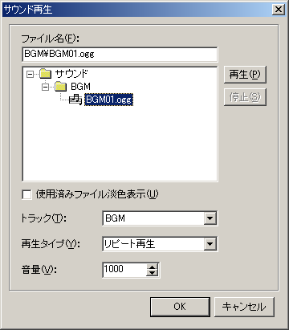
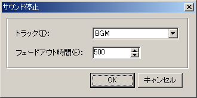

チュートリアル
サウンドを鳴らす
LiveNovelは、BGM、ボイス、効果音の３つのサウンドトラックを持っています。再生、停止はシナリオ内のコマンドで行います。
「プロジェクト」メニューの「サウンドフォルダを開く」を選択し、開いたフォルダにサウンドファイルを入れてください。サブフォルダを作っても構いません。
ファイルが用意できたら、BGMを再生してみます。「挿入」メニューの「サウンド再生」を選択してください。

「ファイル名」
に鳴らすファイルを設定します。
「トラック」
は使用するトラックです。ここでは「BGM」を使います。
「再生タイプ」
は以下のようになっています。
通常再生
ループせずに一回だけ再生します
リピート再生
停止させるまでループ再生し続けます
再生終了まで待つ
一回再生し、再生が終了するまでシナリオ進行を停止します
ここではBGMなので「リピート再生」を選択します。
「音量」
はサウンドの音量の割合で、1〜1000の間で指定します。1000で100%の音量になります。
実際に再生される音量は、プレイヤーがオプション画面で調整した音量にこの値を掛けたものになります。
サウンドを止める時は「サウンド停止」コマンドを使います。

「トラック」
は停止させたいトラックです。
「フェードアウト時間」
は停止にかける時間をミリ秒単位で指定します。0ならすぐに停止します。
←戻る
進む→